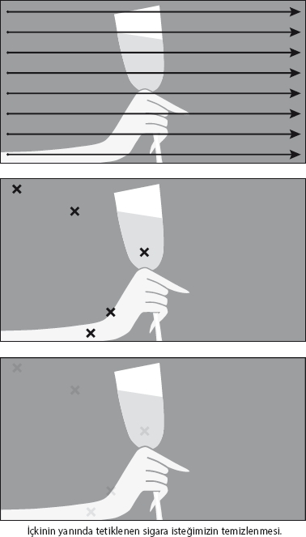

NeuroFormat® sisteminin en etkili olduğu konulardan biri de aslında sigara bağımlılığı meselesi. Belki inanmak istemeyebilirsiniz, ancak genelde bir saatlik tek bir çalışmayla sigarayı zahmetsiz bir şekilde bıraktırdığım onlarca danışanım oldu.
NeuroFormat® Tekniğiyle bunu nasıl başaracağınızı görelim. Bu uygulamayı yaparken en az 2-3 saattir sigara içmediğinizden emin olun.
Sigara içtiğiniz ortamlar
İlk olarak canınızın en çok sigara içmek istediği zamanların listesini yapın. Mesela, sabah kalkınca, iş yerinde öğle yemeği sonrası, bilgisayar başında, evde TV seyrederken...
Şimdi gözünüzü kapatın, elinize yakılmamış bir sigara alın ve gerçekten listenizdeki ilk durumda olduğunuzu düşünün. Mesela, o an yeni uyanmışsınız, hemen bir şeyler atıştırdınız ve canınız sigara istedi; kendinizi bu durumda tam sigarayı yakacakken hayal edin. Ama kendinize dışarıdan bakmayacak, Hikâye Tekniğinde olduğu gibi kendi bedeninizde olduğunuzu hissedeceksiniz.
Uygulamayı yaparken NeuroFormat® duruşunda olmanıza gerek yok. Asıl hedefiniz doğru göz pozisyonlarını yakalayıp temizlemek olmalı.
Elinizde sigara, ara sıra onu burnunuza götürerek sigara içme isteğinizi tetikleyebilirsiniz. Gözleriniz kapalı bir şekilde, tam sigarayı istediğiniz anı yaşayarak, tarama yapın. Hangi göz pozisyonlarında sigara içme isteğiniz artıyorsa orada durup o duyguyu temizlemelisiniz.

Bu şekilde tüm göz pozisyonlarını tarayarak, her noktada hissettiğiniz duyguyu temizleyin.
Kilidi açmak
Beynin bilinçli olarak bırakmak istediği ama bilinçaltının zevk almak istediği sigara ve benzeri bağımlılıklarda kilidi açmak çok önemli olabilir. Aşağıdakine benzer bir cümleyi kullanarak kilidi açabilirsiniz.
| Örnek kilit ifadesi | |
| Duyguyu hissetme nedenlerimiz. | Şu an sigara içmek istediğim için |
| Duygunun tarifi, hissettiğimiz yer(ler). | .................. 'da hissettiğim bu sıcak (soğuk) duyguya rağmen... |
| Buna rağmen kendimizi sevmek ve duyguyu serbest bırakmak. | bu duygudan kurtulmak istemesem de, sigara içerek bu keyfi yaşamak istiyor olsam da kendimi çok seviyorum. Ama buna ihtiyacım olmadığı için, sigara sağlığıma, mutluluğuma, tüm hayatıma zarar verdiği için bu duyguyu tamamıyla serbest bırakıyorum. |
Sigara içme isteği duyduğunuz tüm farklı durumlar için aynı uygulamayı tekrar edeceksiniz. Sabah kahvaltıdan sonra, yemeğin ardından, arkadaşlarla sohbet ederken... Birer birer benzer durumlarda hissettiğiniz otomatik sigara içme tepkinizi temizleyeceksiniz.
Sigarayı bıraktığınızda hissedeceğiniz kayıpları temizlemek
Sigara sizin için nedir? Bir arkadaş, dost? Onu bıraktığınız zaman hayatınızda gerçekten ne kaybedeceksiniz?
Mesela, sigara içerek sosyalleştiğini düşünüyor musunuz?
Hayatınızda olmazsa, onu bırakırsanız elinizi kolunuzu koyacak bir yer bulamayacağınızdan korkuyor musunuz? İmajınızı, karizmanızı kaybediyor olabilir misiniz?
Hayatınızdaki sizi en çok rahatlatan unsuru kaybediyor olabilir misiniz?
Özellikle daha önceki denemelerinizden dolayı bırakma semptomlarından, yaşayabileceklerinizden korkuyor olabilir misiniz?
Benzer türde herhangi bir kayıp hissedecekseniz, OLUMSUZ ifadeyi yaratarak bu kaygıyı nasıl temizleyeceğinizi biliyorsunuz...
Kaygı temizleme bölümüne tekrar göz atmanız gerekebilir.
Geri kalanı temizlemek
Bu yapacağımız çalışma, temizlik çalışmamızın çok önemli bir bölümünü hallediyor olacak. Ancak, özellikle ilk 3 gün, konunun kimyasal yönü de göz önüne alındığında, bazı zor anlar yaşayabilirsiniz. İşte böyle zor anlarda tek yapmanız gereken, NeuroFormat® vuruşları yapmak...
Sigara içme isteğini hissettiğiniz an farkına varın. Bu duyguyu nerenizde hissediyorsunuz? Önce sadece özel noktanıza vurarak bu duygunun temizlenmesini bekleyin. Eğer duygu azalmıyorsa, kilidi biraz önce paylaştığım cümleyi kullanarak açtıktan sonra, tekrar özel noktayla bu duyguyu temizleyin.
Evet, ilk günler bu uygulamayı tekrarlamanız gerekebilir. Böylece hâlâ içinizde kalan temizlenmemiş duygular dışarı çıkacak, siz benzer yöntemle tüm bu duyguları temizleyeceksiniz.
Belli bir süre (maksimum 2-3 gün) içerisinde normale göre çok daha düşük istek anlarını birer birer temizledikten sonra, onlar da yok olacak, siz de sigarayı tamamıyla bırakmış olacaksınız.
Sağlıklı bir hayat geçirmeniz dileğiyle...